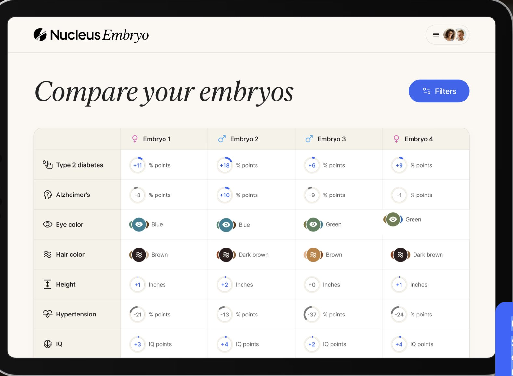
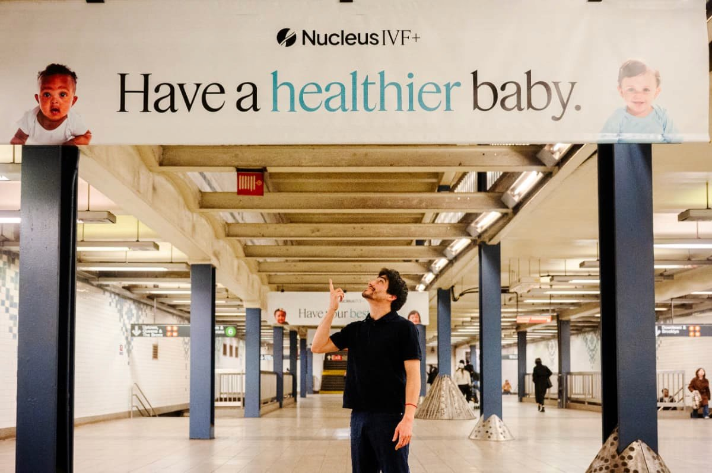
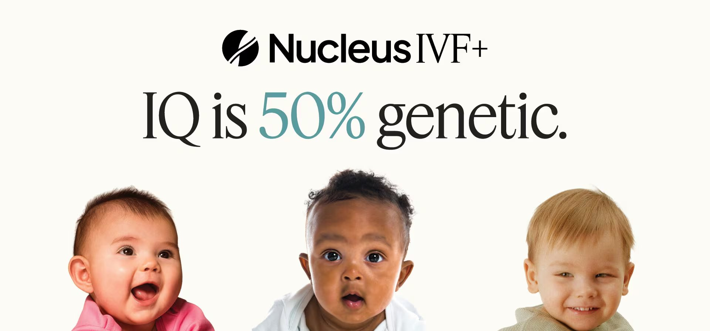

Companion Essay · Harvard Medical School Center for Bioethics
The Field in Practice: Nucleus Genomics and the case for an AI Developer Code of Ethics.
A descriptive look at how AI-enabled embryo selection has reached the public, the science underpinning these systems, and the regulatory framework that governs them.
A note on framing. This page draws on publicly available information and peer-reviewed scholarship. It is offered as descriptive commentary on the broader field of AI-enabled embryo trait selection — not as a verdict on any single company. Nucleus Genomics is one of several companies operating in this space, including Genomic Prediction, Orchid Health, MyOme, and Herasight.1
Why this page exists
The clinical and commercial integration of artificial intelligence (AI) into reproductive medicine is poised to revolutionize the fields of in vitro fertilization (IVF) and preimplantation genetic testing (PGT).
Biotechnology companies, such as Nucleus Genomics, have publicly claimed that they are enabling IVF couples to make informed choices about their future children. Prospective parents could compare embryos based on genetic markers, predicting disease risks for type 2 diabetes, Alzheimer's disease, and hypertension, as well as traits such as eye and hair color, height, and intelligence quotient (IQ).
Although clinicians associated with these technologies have acted in accordance with professional oaths of service and bioethical principles, the AI developers who have designed and deployed these algorithms have not been held to a comparable ethical framework.

The Nucleus Embryo dashboard offers IVF parents the opportunity to compare over 20 embryos and hundreds of genetic indicators to decide which embryo to implant. Source: Nucleus Genomics.
The NYC subway campaign
Over the past few months, the biotechnology company Nucleus Genomics has begun to roll out a public ad campaign across New York City subway stations.
With tag lines like "have your best baby" and "these babies have great genes," this Silicon Valley-based startup is promoting what many are calling designer babies. The campaign has drawn significant attention from the public since Nucleus Genomics claims to be able to predict disease risks for type 2 diabetes, Alzheimer's, and hypertension, and traits such as eye/hair color, height, and IQ.

Nucleus IVF+ advertising in a New York City subway station, 2025. Source: Nucleus Genomics.
According to Nucleus Genomics, their mission is to bring genetics into modern family planning and enable parents to have more details on their IVF embryos. While supporters argue that better genetic insights will allow families to avoid certain illnesses, critics say that these ads make children look like products and bring concerns about eugenics and inequality back into the spotlight.

A Nucleus IVF+ campaign claiming a statistical relationship between genetics and IQ. Source: Nucleus Genomics.
This perspective directly underscores the roles of developers and founders in the public perception of PGT tools.
Where the science stands
The literature on polygenic embryo screening converges on several critical points:
Preimplantation genetic testing (PGT) has pivoted from its original purpose of avoiding serious monogenic diseases to now include probabilistic trait selection.2
The newer criterion of genomic metrics and risk profiles has no significant predictive value.2
This uncertainty is especially dangerous in the commercialization of these PGT technologies, as developers and companies rebrand this weak predictive genomic data into targeted marketing.2
AI tools have not been sufficiently validated and are clinically unproven; there is an evident gap between the technological applications of AI-enabled embryo selection models and their practical clinical utility.3
There is high uncertainty of polygenic risk scoring and an inherent systemic bias in the AI algorithms, as their data focuses on European ancestry cohorts.4
Despite identical architectures and training parameters, replicate AI models for embryo selection produce varying embryo rankings — there are significant risks of model volatility and prediction drift that are understated in embryo assessment technologies.5
Current PRS-based embryo selection systems have limited predictive accuracy and risk misleading prospective parents.6
An IVF laboratory. The science of polygenic embryo screening operates inside facilities certified under CLIA, but the algorithms producing the rankings are not subject to comparable pre-market review.
The regulatory gap: CLIA, not FDA
A central reason these systems can reach the public so quickly is the regulatory framework under which they operate. The following points are drawn from peer-reviewed literature and U.S. government sources:
PGT-based embryo screening operates as a Laboratory Developed Test (LDT) — a category that historically has not required FDA pre-market review.78
CLIA certification governs laboratory operations — accuracy, quality control, and personnel — but does not examine whether the tests performed are clinically valid.7
Since the 1990s, expert panels and members of Congress have raised concerns about this regulatory gap and the need for FDA to address it.7
In May 2024, the FDA issued a final rule that would have brought LDTs under medical device regulation, with phased pre-market review requirements.8
On March 31, 2025, the U.S. District Court for the Eastern District of Texas vacated that final rule, holding that the FDA lacks statutory authority under the Federal Food, Drug, and Cosmetic Act to regulate LDTs as medical devices.9
The VALID Act — the Verifying Accurate Leading-edge IVCT Development Act — was Congress's prior attempt to create a legal framework for LDT oversight. It failed to pass in the 117th and 118th Congresses.9
Current FDA and ISO standards cannot keep pace with the constantly evolving algorithms, cybersecurity risks, and systemic disparities in reproductive medicine.10
What CLIA Covers
Laboratory accuracy and reliability
Personnel qualifications
Quality control processes
Analytical validity of the test
What CLIA Does NOT Cover
Clinical validity of the underlying algorithm
Predictive accuracy across populations
Pre-market efficacy review
Disclosure of model limitations
Core ethical concerns
Drawing on the peer-reviewed literature reviewed for this Capstone, several ethical concerns recur across this domain:
Overclaiming and the probabilistic-versus-deterministic gap. When the literature steers attention away from the probabilistic nature of the genomic data and toward ambiguous risk scores, developers and companies actively transform uncertainty into clinical authority.2
Limited predictive validity. Even the most sophisticated models have not overcome the foundational limits of current embryo-viability markers, and the first randomized controlled trial for AI-enabled embryo selection displayed no significant improvement in pregnancy rates when compared to embryologists.311
Commercial conflicts of interest. Between commercial interests and developer biases, it is evident that the creators of these reproductive technologies heavily influence these tools long before they reach the clinic.12
Equity and ancestry bias. There is high uncertainty of polygenic risk scoring and an inherent systemic bias in the AI algorithms, as their data focuses on European ancestry cohorts.46
Developer accountability gap. AI developers often feel ethically powerless post-launch, even though they had full autonomy while creating the systems.13
The cautionary precedent. Without strong professional norms and guidelines, developers and clinicians may overclaim benefits and minimize uncertainty — as seen previously in the unproven stem-cell tourism market.14
Rather than being "optimal" engineering goals, transparency and interpretability turn into ethical duties.
— from this Capstone's literature synthesis
Why a Code is necessary
To ensure that AI-enabled innovations in IVF and PGT are deployed ethically and safely, AI developers must subscribe to fiduciary standards of patient welfare, scientific integrity, and social responsibility. These professional ethical standards for developers are not merely aspirational but necessary for safeguarding patients, future children, and public trust.
Questions including "who is to be held accountable?" and "what is the role of AI developers?" make this project feel less abstract and more human. As clinical AI continues to expand, there will be more guardrails that need to be quickly established to ensure that new moral consequences are not introduced.
Bioethics is more than just physician and patient interactions.
— from this Capstone's literature synthesis
Read the Code of Ethics
This essay accompanies the Code of Professional Ethics for AI Developers in Reproductive Embryo Selection Systems, which translates these concerns into operational, enforceable obligations.
Capalbo, A., de Wert, G., Mertes, H., Klausner, L., Coonen, E., Spinella, F., Van de Velde, H., Viville, S., Sermon, K., Vermeulen, N., Lencz, T., & Carmi, S. (2024). Screening embryos for polygenic disease risk: a review of epidemiological, clinical, and ethical considerations. Human Reproduction Update, 30(5), 529–557.
Capalbo, A., & Wells, D. (2025). The evolution of preimplantation genetic testing: Where is the limit? Reproductive Biomedicine Online, 50(4), 104845.
Cohen, J., Silvestri, G., Paredes, O., Martin-Alcala, H. E., Chavez-Badiola, A., Alikani, M., & Palmer, G. A. (2025). Artificial intelligence in assisted reproductive technology: separating the dream from reality. Reproductive Biomedicine Online, 50(4), 104855.
Karavani, E., Zuk, O., Zeevi, D., Barzilai, N., Stefanis, N. C., Hatzimanolis, A., Smyrnis, N., Avramopoulos, D., Kruglyak, L., Atzmon, G., Lam, M., Lencz, T., & Carmi, S. (2019). Screening Human Embryos for Polygenic Traits Has Limited Utility. Cell, 179(6), 1424–1435.
Thirumalaraju, P., Kanakasabapathy, M. K., Kandula, H., Kandula, T., Katkuri, A. V. R., Cipriano, C., Malmsten, J. E., Zaninovic, N., Bormann, C. L., & Shafiee, H. (2025). Stability and reliability of artificial intelligence models in embryo selection for in vitro fertilization. Fertility and Sterility. Advance online publication.
Haining, C. M., Savulescu, J., Keogh, L., & Schaefer, G. O. (2025). Polygenic risk scores and embryonic screening: considerations for regulation. Journal of Medical Ethics, 51(10), 719–728.
National Human Genome Research Institute (NIH). Regulation of Genetic Tests. genome.gov/about-genomics/policy-issues/Regulation-of-Genetic-Tests.
U.S. Food and Drug Administration. Laboratory Developed Tests. fda.gov/medical-devices/in-vitro-diagnostics/laboratory-developed-tests.
Congressional Research Service. (2025). District Court Rules FDA Lacks Authority to Regulate Laboratory Developed Tests. Legal Sidebar LSB11312.
Curchoe, C. L. (2023). Unlock the algorithms: Regulation of adaptive algorithms in reproduction. Fertility and Sterility, 120(1), 38–43.
Aufieri, R., & Mastrocola, F. (2025). Balancing Technology, Ethics, and Society: A Review of Artificial Intelligence in Embryo Selection. Information, 16(1), 18.
Koplin, J. J., Johnston, M., Webb, A. N. S., Whittaker, A., & Mills, C. (2025). Ethics of artificial intelligence in embryo assessment: Mapping the terrain. Human Reproduction, 40(2), 179–185.
Griffin, T. A., Green, B. P., & Welie, J. V. M. (2024). The ethical agency of AI developers. AI and Ethics, 4, 179–188.
Munsie, M., & Hyun, I. (2014). A question of ethics: Selling autologous stem cell therapies flaunts professional standards. Stem Cell Research, 13(3), 647–653.